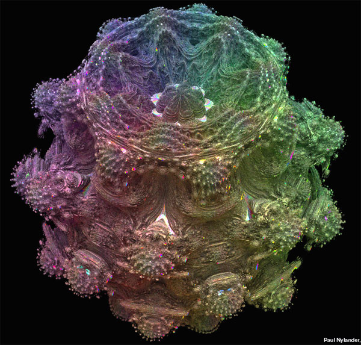

Seasoned Assist by Silicon Monday

This is a link. Mr. Monday, you're on in ten! Hey, that's got a nice ring; wouldja say it again? S#!t, my mic's on? Damn it, does my tie look straight? Hey, get your hands off me! ...Woah. Allow me to introduce myself. I'm the glint in the bottle as it falls from the shelf. I've carried the weight of the world on my shoulders for twenty years, look at me now! ...Senses Fail, anyone? Nevertheless, the pleasure is mine! Waitstaff, pray tell, how we doing on wine? Wait, wait, wait. Wait! The young broad with the butterfly necklace looks like she's had enough. Let's not be reckless.
This is a link. Do you feel like you could've heard this song before, but you can't say for certain? Ugh, can you people even cry anymore? Are you so used to hurtin'? Switch on The Pink Opaque. F#%k is Orange, resurface from the dark of the lake. Es para chuparse los dedos, fresh air in the lungs. Consciousness, emotion, and opposable thumbs. And I thought that it could've been something... Was it something? Am I in over my head? I'm thinking I could use a little more nothing... Sick of loving, sick of it.
This is a link. A valentine stapled to a cease and desist. I'm getting mixed signals, tell me you want me. Triangulate the jaguar with your ears as your eyes; I hear her licking her lips to taunt me. Red flags and alarm bells and klaxons going off; Neck down, all black like Romanoff. Sardonic in a way that rips your patience to threads— hey, maybe I'm a live wire, but it beats being dead! And I thought that it could've been something... Was it something? Am I in over my head? I'm thinking I could use a little more nothing... Sick of loving, sick of it.